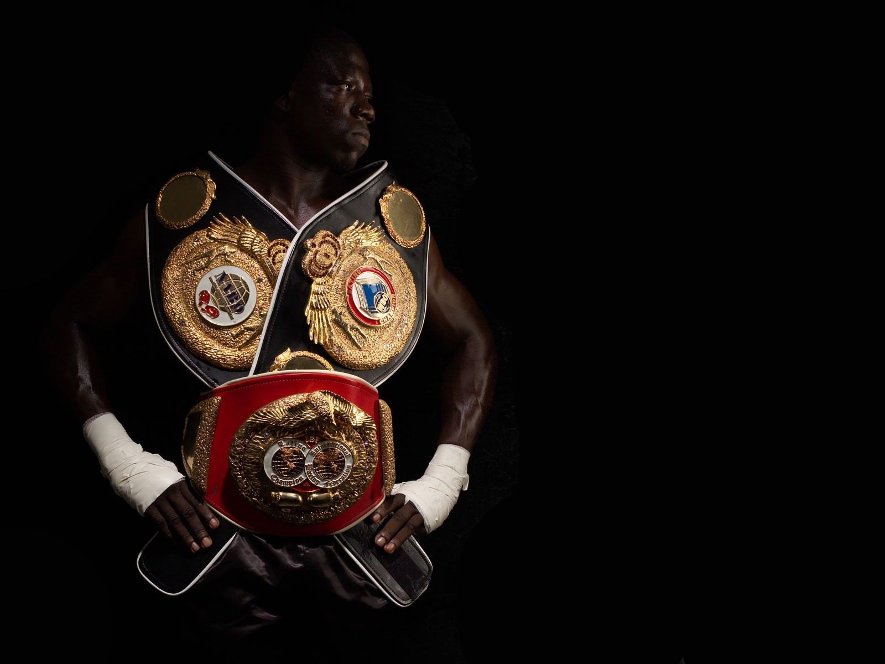
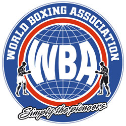
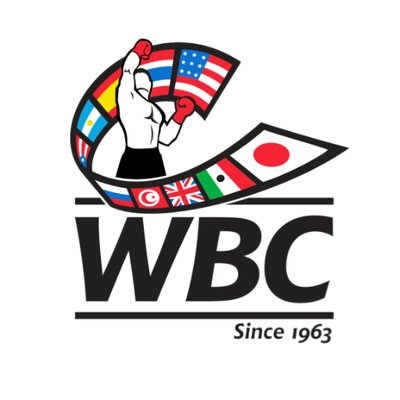
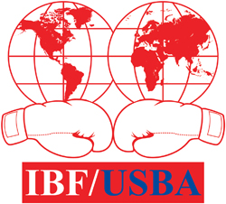
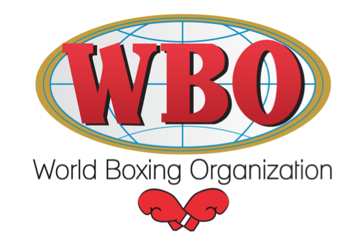
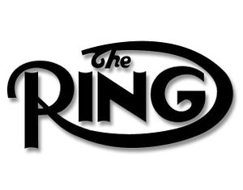

Since at least John L. Sullivan, in the late 19th century, there have been world champions in professional boxing. The first of today's organizations to award a world title was the World Boxing Association (WBA), then known as the National Boxing Association (NBA), when it sanctioned its first title fight in 1921 between Jack Dempsey and Georges Carpentier for the world heavyweight championship.
There are now four major sanctioning bodies in professional boxing. The official rules and regulations of the World Boxing Association, World Boxing Council (WBC), International Boxing Federation (IBF), and World Boxing Organization (WBO) all recognize each other in their rankings and title unification rules. Each of these organizations sanction and regulate championship bouts and award world titles. American boxing magazine The Ring began awarding world titles in 1922.
There are seventeen weight divisions. To compete in a division, a boxer's weight must not exceed the upper limit. Manny Pacquiao has won world championships in eight different weight divisions, more than any other boxer. The Klitschko brothers, Vitali and Wladimir, held all four major titles in the heavyweight division from 2011 to 2013; they were the first brothers to hold versions of the heavyweight championship at the same time.
Championships
When a champion, for reasons beyond his control such as an illness or injury, is unable to defend his title within the normal mandatory time, the sanctioning bodies may order an interim title bout and award the winner an interim championship. The WBA and WBC may change the status of their inactive champions to "Champion in Recess".
World boxing Association
The World Boxing Association (WBA) was founded in 1921 as the National Boxing Association (NBA), a national regulating body of the United States. On August 23, 1962, the NBA became the WBA, which today has its head office in Panama. According to WBA championship rules, when a champion also holds a title of one of the other three major sanctioning bodies in an equivalent weight division, that boxer is granted a special recognition of "Unified Champion", and is given more time between mandatory title defences. The WBA Championships Committee and President may also designate a champion as a "Super Champion" or "Undisputed Champion" in exceptional circumstances; the standard WBA title is then vacated and contested between WBA-ranked contenders. When a WBA "Regular Champion" makes between five and ten successful defences, he may be granted the WBA "Super" title upon discretion of a vote of the WBA's board of governors.
World Boxing Council
The World Boxing Council (WBC) was founded in Mexico City, Mexico on February 14, 1963 in order to establish an international regulating body. The WBC established many of today's safety measures in boxing, such as the standing eight count, a limit of 12 rounds instead of 15, and additional weight divisions. More information about the WBC's titles including "Silver", "Diamond", "Emeritus", "Honorary", and "Supreme Champion" can be read at the WBC article.
International Boxing Federation
The International Boxing Federation (IBF) originated in September 1976 as the United States Boxing Association (USBA) when American members of the WBA withdrew in order to legitimize boxing in the United States with "unbiased" ratings. In April 1983, the organization established an international division that was known as the United States Boxing Association-International (USBA-I). In May 1984, the New Jersey-based USBA-I was renamed and became the IBF.
World Boxing Organization
The World Boxing Organization (WBO) was founded in San Juan, Puerto Rico (which is a self-governing commonwealth of the United States) in 1988. In its early years the WBO's titles were not widely recognized. By 2012 when the Japan Boxing Commission officially recognized the governing body, it had gained similar status to the other three major sanctioning bodies. Its motto is "dignity, democracy, honesty." When a WBO champion has reached "preeminent status", the WBO's Executive Committee may designate him as a "Super Champion". However, this is only an honorary title and not the same as the WBA's policy of having separate "Super" and "Regular" champions. A WBO "Super Champion" cannot win or lose that recognition in the ring; it is merely awarded by the WBO.
The Ring
The boxing magazine The Ring maintains its own version of the lineal championship. The original sequence began from the magazine's first publication in the 1920s until the lineal championships were placed on hiatus in 1989, continuing as late as 1992 in some divisions. When The Ring started awarding titles again in 2001, it did not calculate retrospective lineages to fill in the gap years, instead nominating a new champion. CBZ commented in 2004, "The Ring has forfeited its credibility by pulling names out of its ass to name fighters as champions". In 2007, The Ring was acquired by the owners of fight promoter Golden Boy Promotions, which has publicized The Ring's world championships when they are at stake in fights it promotes (such as Joe Calzaghe vs. Roy Jones Jr. in 2008). Since 2012, to reduce the number of vacant titles, The Ring allows fights between a No. 1 or No. 2 contender and a No. 3, No. 4, or No. 5 contender to fill a vacant title. This has prompted further doubts about its credibility.
Some boxing journalists have been extremely critical of the new championship policy and state that if this new policy is followed, the Ring title will lose the credibility it once held.
Lineal
The Transnational Boxing Rankings Board (TBRB) was formed in October 2012 as a volunteer initiative to provide boxing with top-ten rankings, identify the singular world champion of every division. Board membership includes fifty respected boxing journalists and record keepers from around the world who are uncompromised by sanctioning bodies and promoters.
The board was formed to continue where The Ring "left off" in the aftermath of its purchase by Golden Boy Promotions in 2007 and the following dismissal of the editorial board headed by Nigel Collins. After the new editors announced a controversial new championship policy in May 2012, three prominent members of the Ring Advisory Panel resigned. These three members (Springs Toledo, Cliff Rold and Tim Starks) became the founding members of the Transnational Boxing Rankings Board, which was formed over the summer of 2012 with the assistance of Stewart Howe of England. The board only awards vacant championships when the two top-ranked fighters in any division meet, and currently recognizes legitimate world champions or "true champions" in each weight class.
Current Champions
The current champions in each weight division are listed below. Each champion's professional boxing record is shown in the following format: wins–losses–draws–no contests (knockout wins).
Heavyweight (200+ lb/90.7+ kg)
| WBA | WBC | IBF | WBO | The Ring | Lineal |
|
Anthony Joshua(super champion) United Kingdom 21-0-0-0 (20) |
Deontay Wilder United States 40-0-0-0(39) |
Anthony Joshua United Kingdom 21-0-0-0 (20) |
Anthony Joshua United Kingdom 21-0-0-0 (20) |
Vacant | Vacant |
Cruiserweight (200 lb/90.7 kg)
| WBA | WBC | IBF | WBO | The Ring | Lineal |
|
Murat Gassiev Russia 26-0-0-1 (19) |
Oleksandr Usyk Ukraine 14-0-0-0(11) |
Murat Gassiev Russia 26-0-0-1 (19) |
Oleksandr Usyk Ukraine 14-0-0-1 (11) |
Vacant | Vacant |
Light heavyweight (175 lb/79.4 kg)
| WBA | WBC | IBF | WBO | The Ring | Lineal |
|
Dmitry Bivol Russia 13-0-0-0 (11) |
Adonis Stevenson Canada 29-1-0-0(24) |
Artur Beterbiev Russia 12-0-0-0 (12) |
Sergey Kovalevk Russia 14-0-0-1 (11) |
Vacant |
Adonis Stevenson Canada 29-1-0-0 (24) |
Super middleweight (168 lb/76.2 kg)
| WBA | WBC | IBF | WBO | The Ring | Lineal |
|
George Groves United Kingdom 28-3-0-0 (20) |
David Benavidez United States 20-0-0-0(17) |
James DeGale United Kingdok 24-2-1-0 (14) |
Gilberto Ramírez Mexico 37-0-0-0 (25) |
Vacant | Vacant |
Middleweight (160 lb/72.6 kg)
| WBA | WBC | IBF | WBO | The Ring | Lineal |
|
Gennady Golovkin Kazakhstan 37-0-1-0 (33) |
Gennady Golovkin Kazakhstan 37-0-1-0 (33) |
Gennady Golovkin Kazakhstan 37-0-1-0 (33) |
Billy Joe Saunders United Kingdom 26-0-0-0 (12) |
Canelo Álvarez Mexico 49-1-2-0 (34) |
Vacant |
Light middleweight (154 lb/69.9 kg)
| WBA | WBC | IBF | WBO | The Ring | Lineal |
|
Jarrett Hurd United States 22-0-0-0 (15) |
Jermell Charlo United States 30-0-0-0 (15) |
Jarrett Hurd United States 22-0-0-0 (15) |
Saddam Ali United States 26-1-0-0 (14) |
Vacant | Vacant |
Welterweight (147 lb/66.7 kg)
| WBA | WBC | IBF | WBO | The Ring | Lineal |
|
Keith Thurman United States 28-0-0-1 (22) |
Vacant |
Errol Spence Jr. United States 23-0-0-0 (20) |
Jeff Horn Australia 18-0-1-0 (12) |
Vacant | Vacant |
Light welterweight (140 lb/63.5 kg)
| WBA | WBC | IBF | WBO | The Ring | Lineal |
|
Kiryl Relikh Belarus 22-2-0-0 (19) |
José Ramírez United States 22–0–0–0 (16) |
Vacant | Vacant | Vacant | Vacant |
Lightweight (135 lb/61.2 kg)
| WBA | WBC | IBF | WBO | The Ring | Lineal |
|
Jorge Linares Venezuela 44–3–0–0 (27) |
Mikey Garcia United States 38–0–0–0 (30) |
Robert Easter Jr. United States 21–0–0–0 (14) |
Ray Beltrán Mexico 35–7–1–1 (21) |
Jorge Linares Venezuela 44–3–0–0 (27) |
Vacant |
Super featherweight (130 lb/59 kg)
| WBA | WBC | IBF | WBO | The Ring | Lineal |
|
Gervonta Davis United States 20–0–0–0 (19) |
Miguel Berchelt Mexico 33–1–0–0 (29) |
Vacant |
Vasyl Lomachenko Ukraine 10–1–0–0 (8) |
Vacant | Vacant |
featherweight (126 lb/57.2 kg)
| WBA | WBC | IBF | WBO | The Ring | Lineal |
|
Léo Santa Cruz Mexico 34–1–1–0 (19) |
Gary Russell Jr. United States 28–1–0–0 (17) |
Lee Selby United Kingdom 26–1–0–0 (9) |
Óscar Valdez Mexico 24–0–0–0 (19) |
Vacant | Vacant |
Super bantamweight (122 lb/55.3 kg)
| WBA | WBC | IBF | WBO | The Ring | Lineal |
|
Daniel Roman United States 24–2–1–0 (9) |
Rey Vargas. Mexico 31–0–0–0 (22) |
Ryosuke Iwasa Japan 25–2–0–0 (16) |
Jessie Magdaleno United States 25–0–0–0 (18) |
Vacant |
Guillermo Rigondeaux Cube 17–1–0–1 (11) |
Bantamweight (118 lb/53.5 kg)
| WBA | WBC | IBF | WBO | The Ring | Lineal |
|
Ryan Burnett United States 19–0–0–0 (9) |
Vacant | Vacant |
Zolani Tete South Africa 27–3–0–0 (21) |
Vacant | Vacant |
Super flyweight (115 lb/52.2 kg)
| WBA | WBC | IBF | WBO | The Ring | Lineal |
|
Khalid Yafai United Kingdom 23–0–0–0 (14) |
Srisaket Sor Rungvisai Thailand 45–4–1–0 (40) |
Jerwin Ancajas Philippines 29–1–1–0 (20) |
Vacant |
Srisaket Sor Rungvisai Thailand 45–4–1–0 (40) |
Srisaket Sor Rungvisai Thailand 45–4–1–0 (40) |
Flyweight (112 lb/50.8 kg)
| WBA | WBC | IBF | WBO | The Ring | Lineal |
|
Artem Dalakian Ukraine 16–0–0–0 (11) |
Cristofer González Nicaragua 27–3–0–0 (18) |
Vacant |
Sho Kimura Japan 16–1–2–0 (9) |
Vacant | Vacant |
Light flyweight (108 lb/49 kg)
| WBA | WBC | IBF | WBO | The Ring | Lineal |
|
Ryoichi Taguchi Japan 27–2–2–0 (12) |
Ken Shiro Japan 12–0–0–0 (6) |
Ryoichi Taguchi Japan 27–2–2–0 (12) |
Ángel Acosta Puerto Rico 17–1–0–0 (17) |
Ryoichi Taguchi Japan 27–2–2–0 (12) |
Vacant |
Minimumweight (105 lb/47.6 kg)
| WBA | WBC | IBF | WBO | The Ring | Lineal |
|
Thammanoon Niyomtrong Thailand 17–0–0–0 (7) |
Wanheng Menayothin Thailand 49–0–0–0 (17) |
Hiroto Kyoguchi Japan 9–0–0–0 (7) |
Ryuya Yamanaka Japan 16–2–0–0 (5) |
Vacant | Vacant |